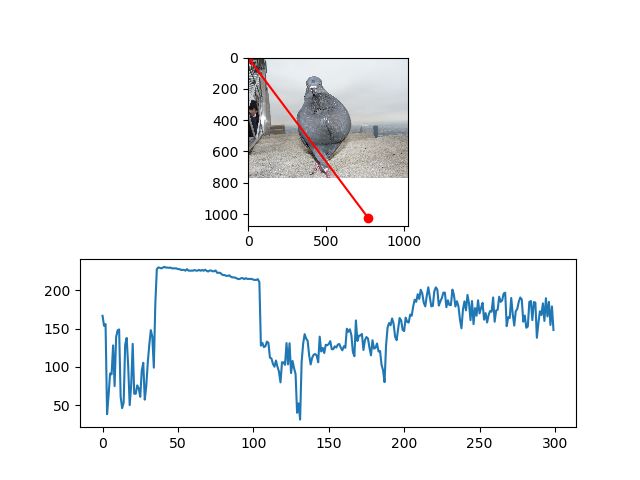

--- class: left, middle # Information about your TAs -- * Asem Alaa and Ayman Anwar, graduates of 2016 class. -- * e-mail: `asem.a.abdelaziz@gmail.com` -- * e-mail: `ayman.anwar.bio@gmail.com` -- * Office hours and materials are available on the course page. -- * Asem`s main research interests: Bioinformatics Algorithms and Machine Learning -- * Ayman`s main research interests: Neuroinformatics and Machine Learning. --- class: left, middle # Attendance * Attendance is a requirement to pass the courses. -- * Not showing in more than 25% of lectures or tutorials is penalized by failing in the course. --- class: left, middle # .red[Cheating] -- ## be it in exams or assignments -- * [{الغش في الامتحانات | دار الإفتاء المصرية}](http://dar-alifta.org/AR/ViewFatwa.aspx?ID=13501&LangID=1) -- * [{الغش فى الامتحانات | سقفية الشباب بالكنيسة القبطية الأرثوذكسية}](https://youthbishopric.com/%D8%A7%D9%84%D8%BA%D8%B4-%D9%81%D9%89-%D8%A7%D9%84%D8%A7%D9%85%D8%AA%D8%AD%D8%A7%D9%86%D8%A7%D8%AA/) --- class: left, top ## Images as Arrays <img style="width:80%" src="../../images/pixels.png" /> --- class: left, top ### RGB Images -- <img style="width:70%" src="../../images/lenna_rgb.jpg" /> --- class: left, top ### Scaler Images -- <img style="width:70%" src="../../images/lenda_gray.jpeg" /> --- class: left, top ### Binary Images -- <img style="width:70%" src="../../images/lenda_binary.jpg" /> --- class: left, top #### Converting from RGB to Grayscale -- <img style="width:80%" src="../../images/sphinx_rgb.png" /> --- class: left, top #### Cont'd For each RGB pixel, we compute: -- $$ I = \big[0.299, 0.587, 0.114\big] . \big[R, G, B\big]^T$$ -- ```python def rgb2gray(rgb_image): return np.dot(rgb_image[...,:3], [0.299, 0.587, 0.114]) ``` --- class:left, top #### Results -- <img style="width:80%" src="../../images/sphinx_gray.png" /> --- class:left, top ### Converting from Grayscale to Binary Image #### Thresholding -- ```python def binarize( gray_image , threshold ): threshold = np.max( gray_image ) * threshold return 1 * ( gray_image > threshold ) ``` --- class: left, top #### Results -- <img style="width:80%" src="../../images/sphinx_bin.png" /> --- class: left, top ### Hyperspectral Images -- Pixels in Hyperspectral images consists of many channels. -- <img style="width:100%" src="../../images/stones_hsi.png" /> --- class:left, top ### Cont'd <img style="width:100%" src="../../images/surve_hsi.png" /> --- class:left, top ## Mean and Variance -- ```python print( np.mean( image )) print( np.std( image )) ``` --- class: left, top ## Profiles --  --- class: left, top ## Edges ### First-Order Derivatives -- $$ \begin{bmatrix} \frac{\partial f}{\partial x} \\ \frac{\partial f}{\partial y} \end{bmatrix} $$ -- where: $$\textstyle\frac{\partial f}{\partial x}$$ is the derivative with respect to x (gradient in the x direction) $$\textstyle\frac{\partial f}{\partial y}$$ is the derivative with respect to y (gradient in the y direction). --- class: left, top #### Results -- <img style="width:80%" src="../../images/cat_gradient.png" /> --- class: left, top ## Computer Vision Opportunity ### Internship at [{Affectiva}](https://www.affectiva.com) -- <blockquote class="twitter-tweet" data-lang="en"><p lang="en" dir="ltr">📢⁉️ Calling all interns! Looking for a <a href="https://twitter.com/hashtag/Boston?src=hash&ref_src=twsrc%5Etfw">#Boston</a> –based <a href="https://twitter.com/hashtag/engineering?src=hash&ref_src=twsrc%5Etfw">#engineering</a> <a href="https://twitter.com/hashtag/internship?src=hash&ref_src=twsrc%5Etfw">#internship</a>? We are offering exciting opportunities in 2019, see all our openings here! <a href="https://t.co/iMdBXzMcfz">https://t.co/iMdBXzMcfz</a></p>— Rana el Kaliouby (@kaliouby) <a href="https://twitter.com/kaliouby/status/1088185353180274696?ref_src=twsrc%5Etfw">January 23, 2019</a></blockquote> --- class: left, top A very interesting talk by *Rana Elkaliouby* about Affectiva: <div style="max-width:854px"><div style="position:relative;height:0;padding-bottom:56.25%"><iframe src="https://embed.ted.com/talks/lang/ar/rana_el_kaliouby_this_app_knows_how_you_feel_from_the_look_on_your_face" width="854" height="480" style="position:absolute;left:0;top:0;width:100%;height:100%" frameborder="0" scrolling="no" allowfullscreen=""></iframe></div></div> --- class: left, top ### 360imaging in Egypt <img style="width:80%" src="../../images/360imaging.png" /> [{Website}](http://www.360imaging.com/) -- * Planned Dental Surgeries. * They demand highly skilled C++ developers. * Computer Vision background is a plus * They offer opportunities through Wuzzuf. --- class: left, top ## Resources * [{Awsome Computer Vision}](https://github.com/jbhuang0604/awesome-computer-vision), **+5K** starts. * [{Awesome Machine Learning}](https://github.com/josephmisiti/awesome-machine-learning), **30K** starts. --- class: left, top ## Demo files ```bash $ git clone https://github.com/sbme-tutorials/sbe401-week2-demo.git ``` --- class: left, top ## Assignment -- * Assignment [{page}](/2019/cv/assignments/1_assignment1.html) -- * Deadline: **Thursday 26/2/2019 10:00 AM.**